Заметки и читалка
Вкладка Заметки — это весь архив: поиск, отборы, список или сетка и читалка, которая открывается по нажатию на заметку.
На этой странице
Список и сетка
Два вида: список — строками, где видно дату, название, начало текста, теги и значки; сетка — карточками, где влезает больше текста. Вид переключается кнопкой в шапке раздела и запоминается.
Заметки сгруппированы по дням; над списком — счётчик записей и статистика за сегодня.
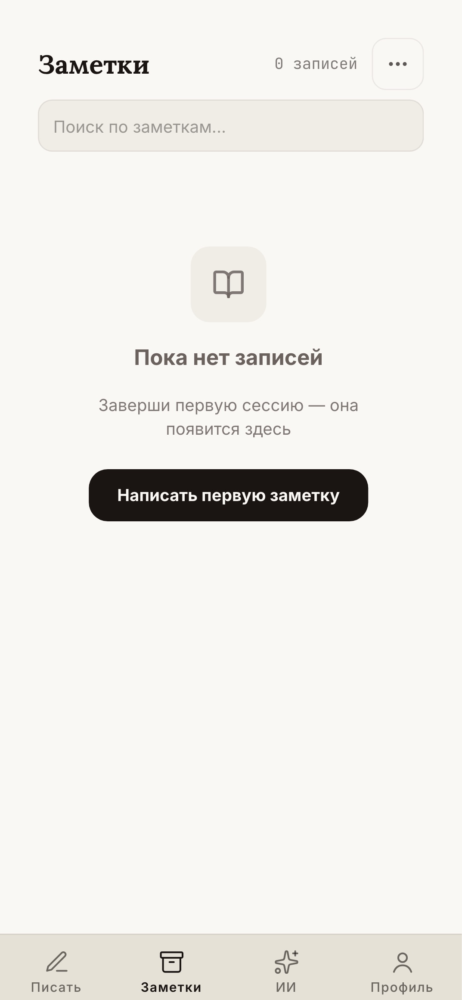
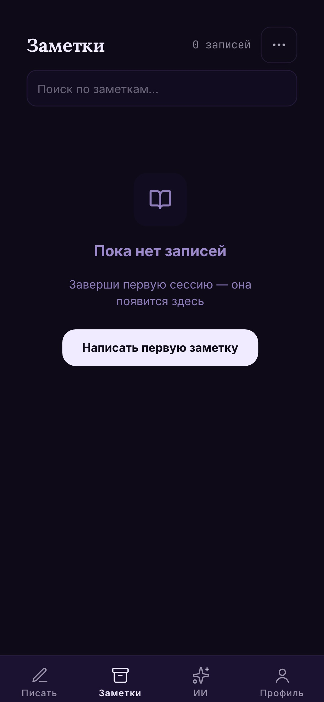
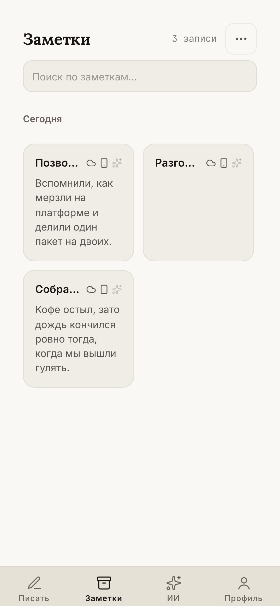
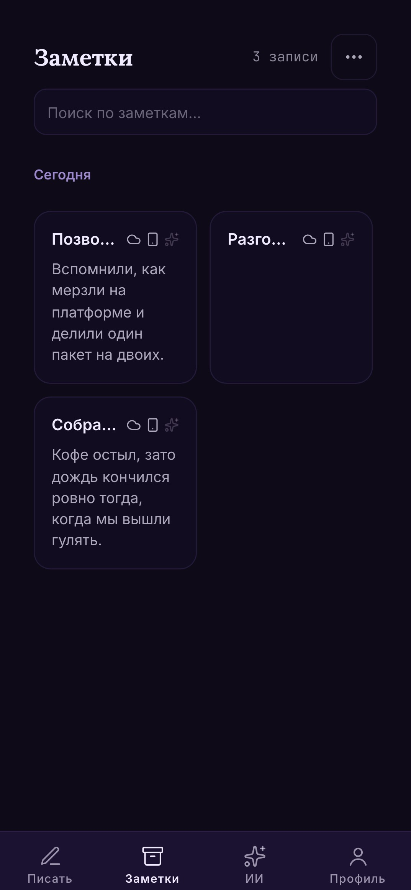
Значки у заметки
- Диск — заметка есть на этом устройстве.
- Облако — есть облачная копия. Бледное облако с чертой — копии нет; жёлтое облако — есть изменения, которые ещё не отправлены.
- Искорка — заметку разбирал ИИ.
- Перечёркнутый глаз — заметка скрыта от ИИ; красным — скрыта.
- Замок — содержимое заперто вместе с сейфом: пока сейф не открыт, текст такой заметки не читается.
На значок можно нажать — он делает действие сразу: например, отправляет заметку в облако или возвращает ей доступ ИИ. В строке заметки есть и кнопка ⋯ — про неё ниже.
Теги и календарь
Два отбора живут в вызываемых панелях, а не в постоянной боковой колонке, как на компьютере:
- Теги — список всех тегов с числом заметок; нажатие оставляет в списке только эти записи, повторное нажатие снимает отбор;
- Календарь — месячная сетка, где видно дни, в которые вы писали; нажатие на день оставляет только его заметки.
Обе панели закрываются жестом вниз, кнопкой или аппаратной «назад».
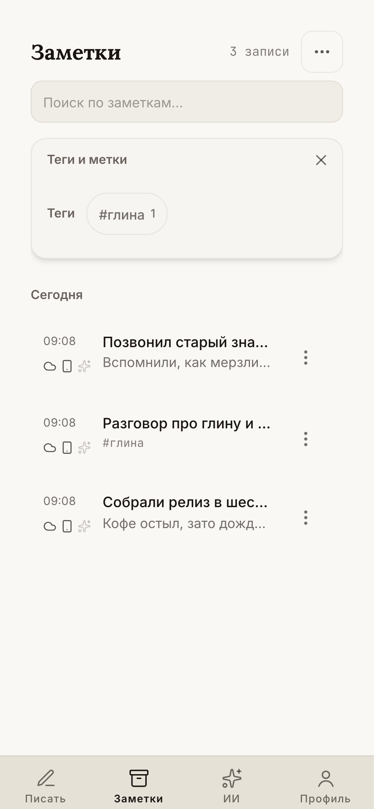
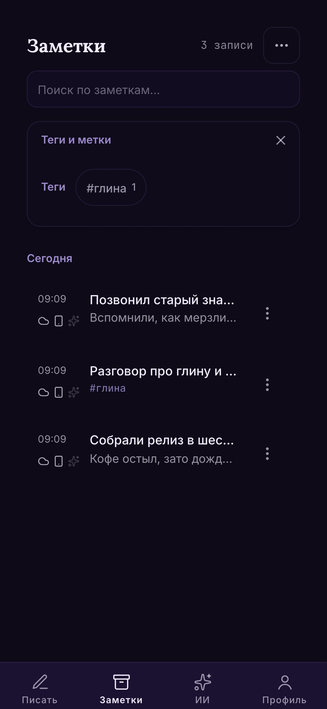
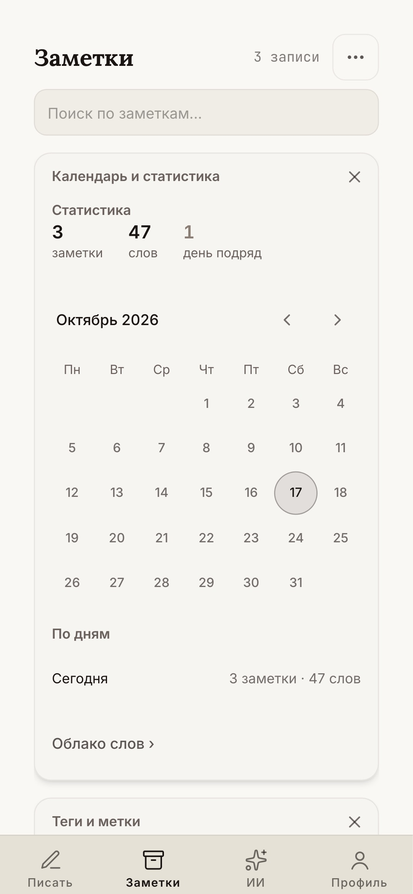
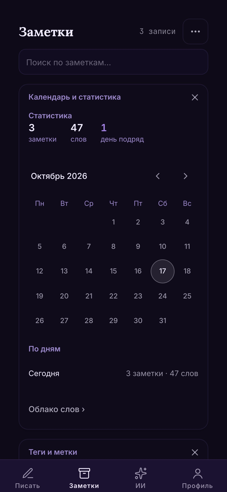
Поиск
Поле поиска — вверху, оно ищет по названию, тексту и тегам и прощает опечатки. Имя человека можно писать в любом падеже: «Оля», «с Олей», «Олю» дают одни и те же заметки. Найденное подсвечивается прямо в списке.
Лист «⋯»
Кнопка ⋯ в строке заметки и в шапке читалки открывает лист действий — тот же набор, что меню на компьютере:
- Продолжить писать — открыть заметку в редакторе и дописать;
- Добавить тег и выбор метки;
- облако и устройство: Отправить в облако, Убрать копию с устройства, Удалить из облака;
- Не показывать ИИ и Разобрать ИИ;
- Сохранить как…;
- Удалить — в корзине заметка лежит 30 дней.
Лист открывается поверх читалки, а «назад» закрывает по одному: сначала лист, потом читалку.
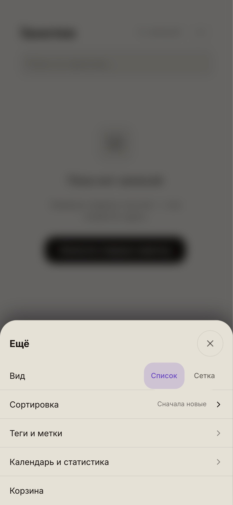
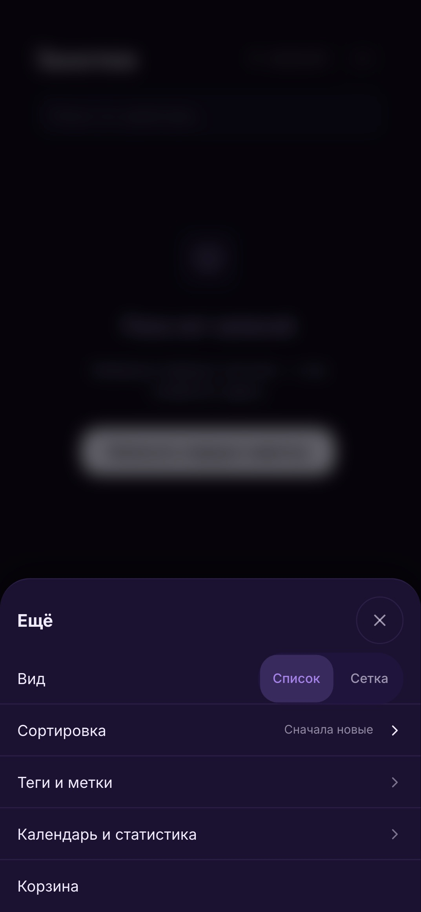
«Сохранить как…»
На телефоне заметку сохраняют через «Поделиться»: файл уходит в файлы, в мессенджер или в другое приложение. Доступны txt, md и docx; PDF на телефоне не предлагается — окна печати там нет.
Если текст заметки ещё не загружен из облака (например, вы зашли с нового телефона), приложение докачает его и только потом сохранит — пустого файла не будет. Если качать нечего, оно скажет настоящую причину: «заметка заперта — открой сейф» или «текст ещё не загружен из облака». Отменённое окно «Поделиться» — это отмена, а не скачивание: файл туда не улетит. А если docx не собрался, на экране появится сообщение, а не молчание.
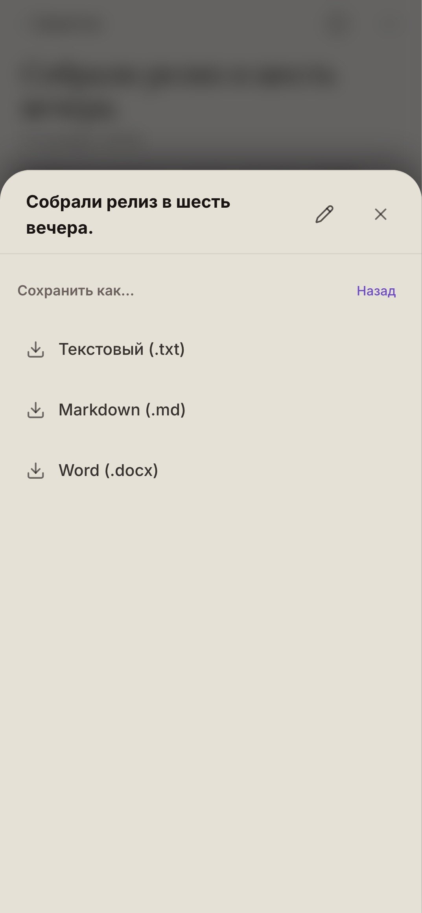
Читалка и «Инфо»
Нажатие на заметку открывает читалку — полноэкранный режим чтения: название, дата, теги, метка и текст целиком, без полей редактирования. Внизу — Инфо и ⋯.
Инфо — это то, что известно о заметке, без редактирования: когда написана, сколько слов и времени, теги, метка, состояние облака и ИИ, версии. Оттуда же можно переименовать заметку и добавить тег.
Продолжить писать из читалки ведёт в редактор. Аппаратная «назад» после этого вернёт вас туда, где вы были до читалки, — а не заставит нажимать её дважды.
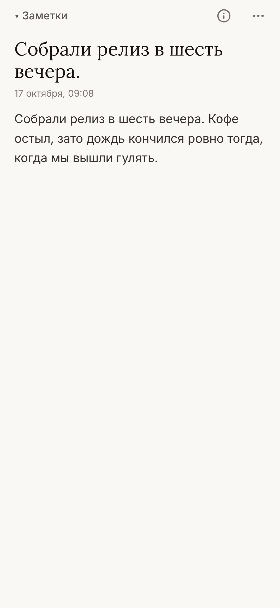
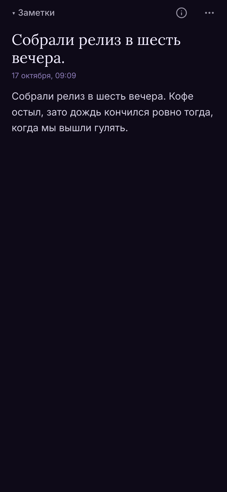
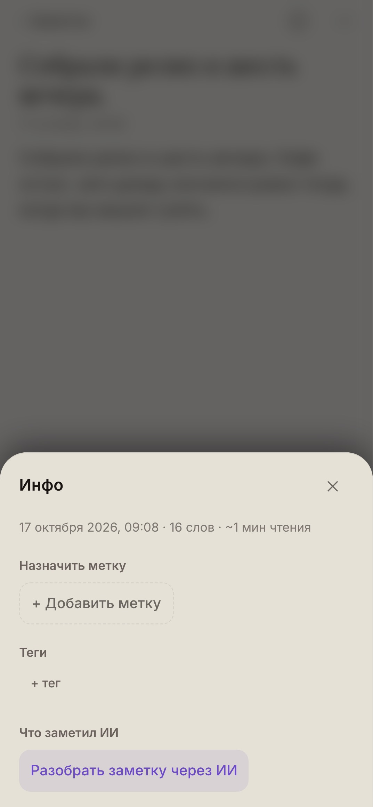
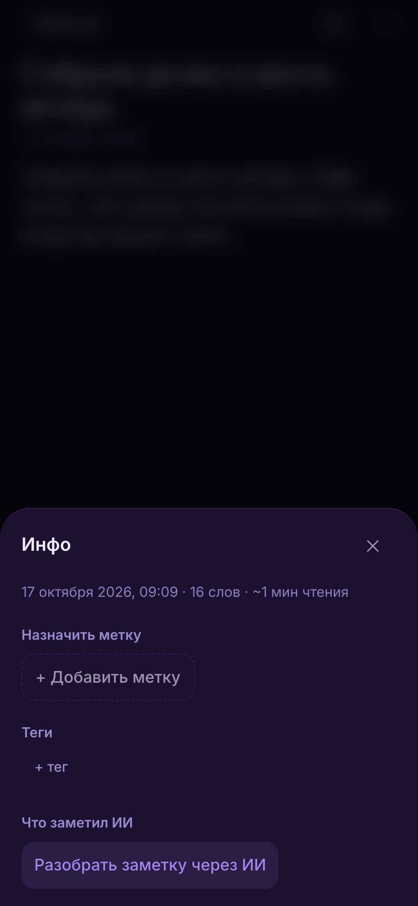
Корзина
Удалённые заметки лежат в корзине 30 дней и восстанавливаются оттуда кнопкой. «Очистить корзину» удаляет их безвозвратно — вместе с облачной копией.
Про архив на компьютере подробнее — «Заметки».